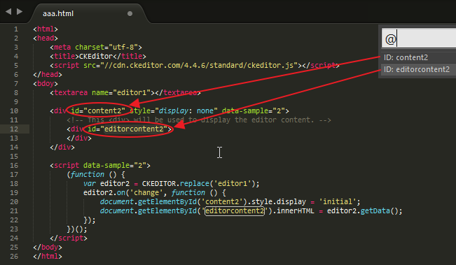
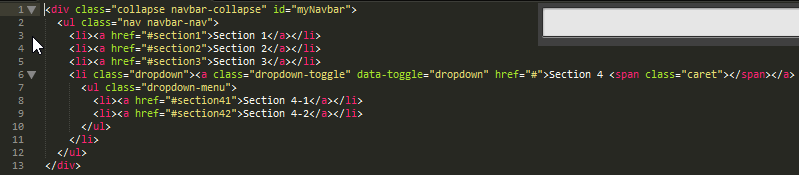
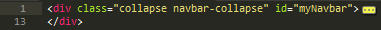
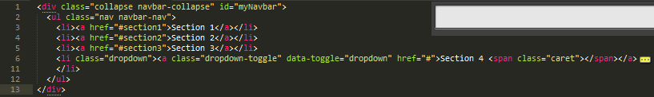
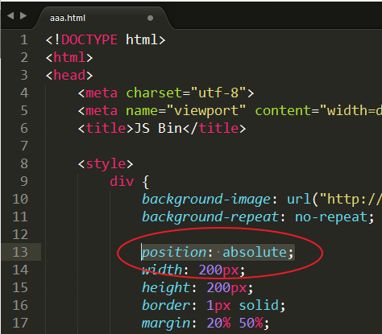
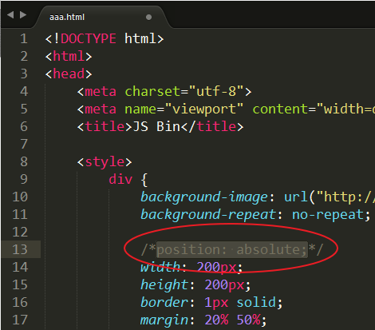
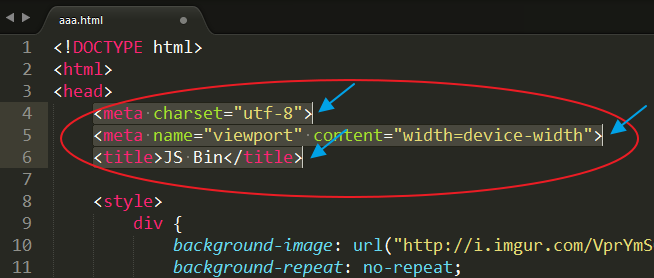

於Sublime Text 3 使用SublimeHighlight複製程式碼格式顏色
一、先去下載並安裝Sublime Text 3
二、再安裝Package Control
於View > Show Console的console中
貼上反黃字串
import urllib.request,os,hashlib; h = '7183a2d3e96f11eeadd761d777e62404' + 'e330c659d4bb41d3bdf022e94cab3cd0'; pf = 'Package Control.sublime-package'; ipp = sublime.installed_packages_path(); urllib.request.install_opener( urllib.request.build_opener( urllib.request.ProxyHandler()) ); by = urllib.request.urlopen( 'http://sublime.wbond.net/' + pf.replace(' ', '%20')).read(); dh = hashlib.sha256(by).hexdigest(); print('Error validating download (got %s instead of %s), please try manual install' % (dh, h)) if dh != h else open(os.path.join( ipp, pf), 'wb' ).write(by)
此步驟如不太懂可參考package Control installation
三、安裝SublimeHighlight
第二步驟安裝完畢後，於Perferences>Package Control
輸入 Add Repository ，然後於底下輸入https://github.com/n1k0/SublimeHighlight/tree/python3
然後再開啟Package Control 輸入Install Package然後找尋SublimeHighlight並裝之，後restart
四、使用
當想要複製syntax color 時，先全選想要複製的程式碼，於tool->commandPaette選擇下列其一選項後，再於目的Ctrl +V貼上，即完成。
SublimeHighlight: convert to HTML: will convert current code to highlighted HTML in a new SublimeText tab.
SublimeHighlight: convert to RTF: will convert current code to highlighted RTF in a new SublimeText tab.
SublimeHighlight: view as HTML: will convert current code to highlighted HTML and open it in your default browser.
SublimeHighlight: view as RTF: will convert current code to an RTF document and open the generated file with your default program.
SublimeHighlight: copy to clipboard as HTML: will convert current code to highlighted HTML and store it into the system clipboard.
SublimeHighlight: copy to clipboard as RTF: will convert current code to raw highlighted RTF and store it into the system clipboard.
五、額外便利設定
1、客製化佈景主題
.於perferences->package Settings->sublimeHighlight->setting-User輸入並儲存
{
"theme": "tango",
"linenos": "inline",
"noclasses": true,
"fontface": "Menlo"
}
2、快捷鍵設定
[
{ "keys": ["ctrl+shift+c"],
"command": "sublime_highlight",
"args": { "target": "clipboard",
"output_type": "rtf"
}},
]
六、預設快捷鍵
其實快捷鍵有n個可用，以下只是抓幾個來介紹
1、Ctrl + r
列出所有可直接跳到ID的路徑

2、Ctrl + k + 0、1、2
如範例原始碼為
<div class="collapse navbar-collapse" id="myNavbar"> <ul class="nav navbar-nav"> <li><a href="#section1">Section 1</a></li> <li><a href="#section2">Section 2</a></li> <li><a href="#section3">Section 3</a></li> <li class="dropdown"><a class="dropdown-toggle" data-toggle="dropdown" href="#">Section 4 <span class="caret"></span></a> <ul class="dropdown-menu"> <li><a href="#section41">Section 4-1</a></li> <li><a href="#section42">Section 4-2</a></li> </ul> </li> </ul> </div>

Ctrl + k + 1 則表示第一層的子層內容全都折疊起來。

Ctrl + k + 2 則表示第二層的子層內容全都折疊起來。

Ctrl + k + 0 則表示全部展開。
3、註解程式碼
在註解程式碼前，必須先把想要註解程式碼的範圍選起來

然後再下快捷鍵「 Ctrl + Shift + / 」，完成後如下圖

而再下一次指令「 Ctrl + Shift + / 」，則會把註解拿掉。
4、多行一次性編輯
多行一次性編輯的快捷鍵為「Ctrl + Shift + 滑鼠右鍵不放拖拉選取」

参考資料：
Sublime Text 2 tutorial part 5: The Command Palette
sublimetext手冊 Package 和 Plugin
Sublime Text 3 - Copy as RTF and HTML with SublimeHighlight
Sublime Text 2 Paste with Colors to MS Word